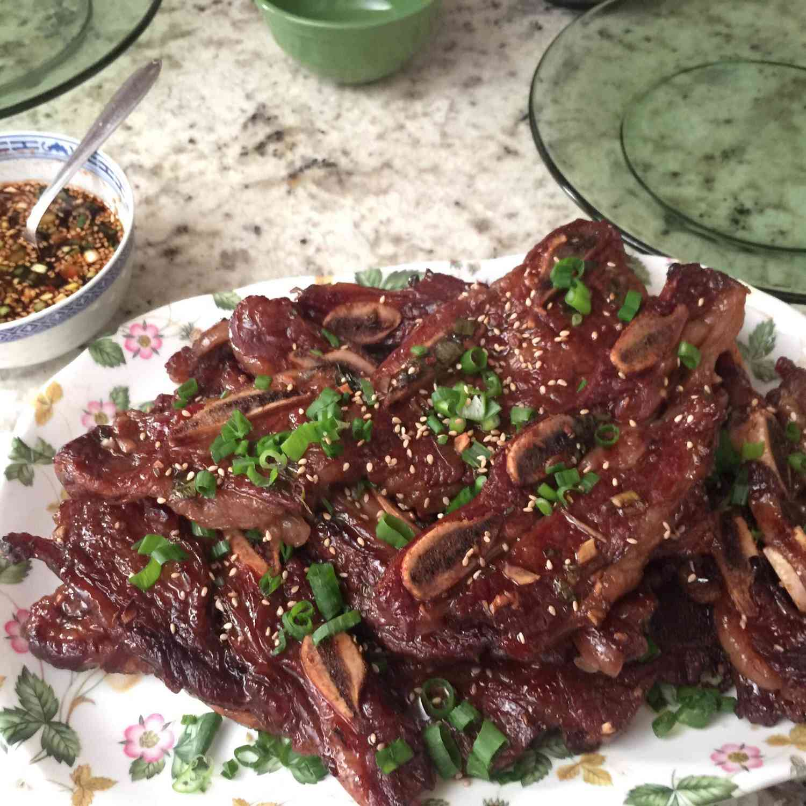
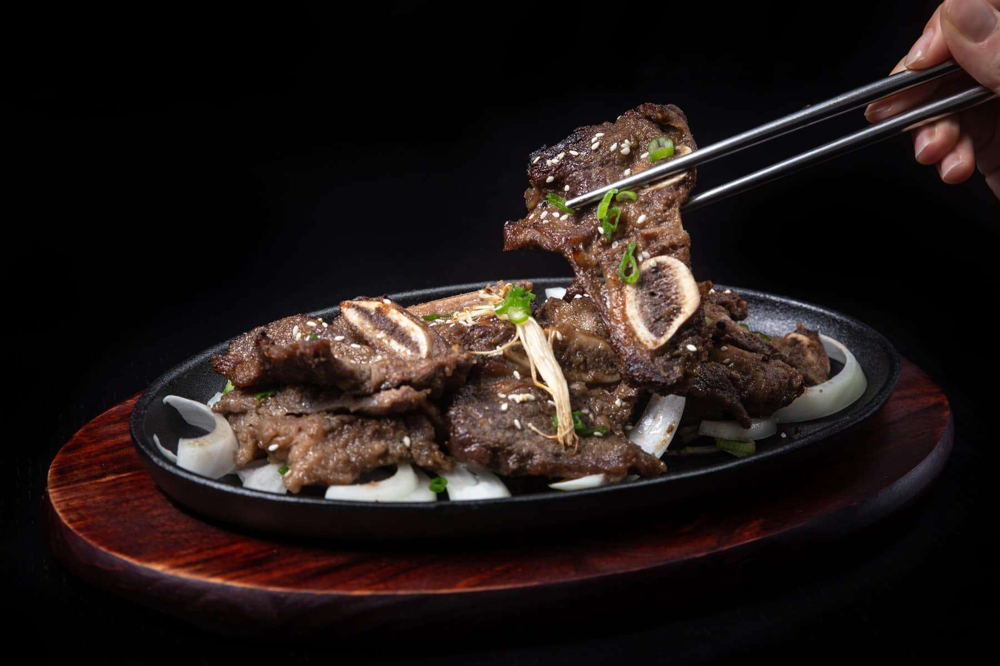
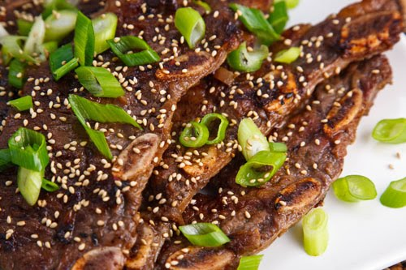

Kalbi
Category:Korean food
This recipe is adequate for 2 people.
Ingredients for cooking:
- 150 gr Korean short ribs
- 1 small onion, peeled and finely grated
- 1 small Asian pear, peeled and finely grated
- 2 green onions, thinly sliced
- 1 cup soy sauce
- ½ cup water
- ¼ cup mirin (rice wine)
- 4 tbsp minced garlicr
- 2 tbsp dark sesame oil
- ¼ teaspoon black pepper



Cooking Directions:
- (1)Coat beef with brown sugar and let sit for 10 minutes.
- (2) Mix remaining marinade ingredients and transfer beef into sealable freezer bags with marinade. Refrigerate for at least 4 hours or overnight, turning bag over several times to coat beef evenly.
- (3)Preheat gas or charcoal grill to medium-high heat. Remove excess marinade from beef and grill, turning once, until the desired doneness is reached (about 3-4 minutes per side).
- (4)Garnish with sliced green onions and serve whole as a main course, or cut into smaller pieces for a starter or party nibble using kitchen shears.
For more information, below links are sugessted:
{kind=link}
:max_bytes(150000):strip_icc()/5692627-3107403012b648979a10780ddd942356.jpg){kind=link}
{kind=link}
{kind=link}